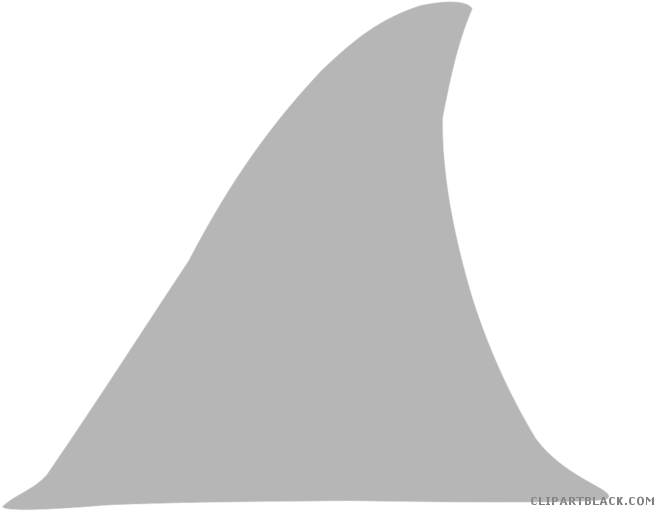

Display filters
Ask precise questions with Wireshark syntax: boolean logic, parentheses, CIDR, quoted strings, contains, matches and hex values.

WIRESHARKInteractive Wireshark training
A guided range built on a real packet analyzer. Every mission loads a capture, asks you to perform a real analysis step, and checks your work as you click, filter, dissect and type. No videos, no slides - just packets.
Beginner to expert: display filters, protocol deep-dives, IPv6, web forensics, encrypted traffic, malware analysis, C2 hunting and incident triage. Every chapter includes ten harder challenge questions spread across its missions, and every mission ends with a fill-in-the-blank check. Hints cost XP, wrong answers are free, and progress is saved in this browser.
The training range
Start at mission 1. Each mission unlocks the next one.
Free-play sandbox
The full analyzer is always available outside the academy. Drop in a pcap or pcapng file and use every Wireshark-style tool: display filters, protocol tree, follow stream, conversations, expert information, coloring rules and IO graphs.
What you will master
Ask precise questions with Wireshark syntax: boolean logic, parentheses, CIDR, quoted strings, contains, matches and hex values.
Read Ethernet, VLAN, IPv4/IPv6, TCP, UDP, ICMP, ARP, HTTP, DNS, TLS, SSH and NTP down to the field that answers the question.
Turn thousands of rows into a story with protocol hierarchy, conversations, endpoints, expert information and IO graphs.
Reassemble TCP or UDP conversations, switch direction, read ASCII or hex, and see the packet numbers behind every byte.
Work an incident end to end: NXDOMAIN, refused ports, zero windows, ICMP unreachable and fatally failed TLS handshakes.
Find, go-to, marks, comments, zoom and every menu one shortcut away. Press F1 inside the viewer for filter help.